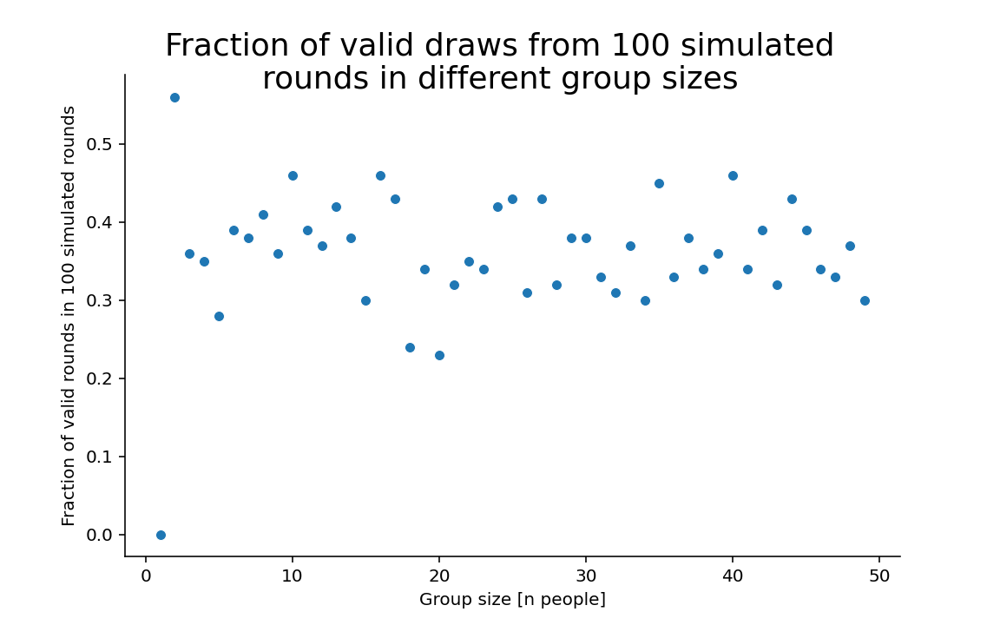
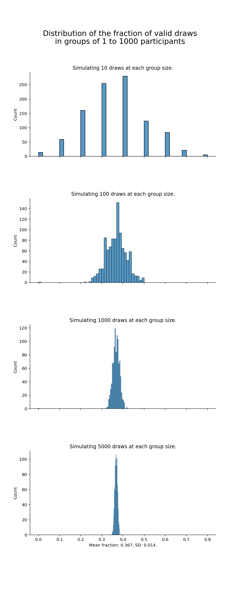

With Spooky Season coming to an end, Holiday Season is up next. Time for a little themed article! If you have done Secret Santa rounds before, you might have run into the issue that that someone drew his or her own name from the lots. How often will you have to repeat the drawing until no one draws her or his own name?
Secret Santa is a game related to the tradition of giving gifts to one another on Christmas. In some regions the game is quite popular and is played in many communities, sports groups, school classes,.
At the time of writing, there are Wikipedia articles on secret santa traditions available in 11 languages. I havent read all of them, but I found out that there are many different variations across the world.
In Germany this game is called Wichteln. Theres also a variation called Schrottwichteln where you ought to give something that is worthless to you, but might be of value for someone else.
For this post I will use the variant that I got to know as the classic version and will build the mathematical question on these rules:
A group of N participants draws lots from a bucket. On each lot is the name of one participant. Each name is included just once, so that the number of lots matches the number of participants. If any of the participants draws their own name, the draw is invalid and the whole process has to be repeated.
Q: What is the probability, that a draw is valid for any group size N?1
If you think about it from an intuitive point of view, there are two contradicting effects:
Before you continue reading, think about what your intuition says: Do larger groups have to repeat the drawing more often or less often? If you want, you can leave your comment in the end and let me know if the result surprised you or not!
First lets create the functions that perform the necessary simulations of drawings for different group sizes and evaluate the correctness of the draws.
import numpy as np
import pandas as pd
import matplotlib.pyplot as plt
import seaborn as sns
import random
random.seed(123)draw_lots() simply returns a random permutation of a sequence from 1 to the group size.
def draw_lots(n_people = 5):
"""
Takes a number of people and returns the simulated frequency of correct drawing rounds.
Parameters
----------
n_people : int, optional
The number of people in a wichtel-round. The default is 5.
Returns
-------
Array of people (arange from 0 to n_people).
Array of lots (random choices without replacement).
"""
people = np.arange(n_people)
lots = np.random.choice(people,size = len(people), replace=False)
return people, lotsverify_draft() checks, whether any of the participants drew herself/himself
def verify_draft(people, lots):
"""
Take two vectors of equal length and returns a boolean whether the draft was a correct wichtel-draft.
Parameters
----------
people : 1D-Array
Array of people (arange from 0 to n_people).
lots : 1D-Array
Vector of lots (random choices without replacement).
Returns
-------
True if the round was valid, false, if not.
"""
# check whether anyone drew his own lot
# print(f"People: {people}")
# print(f"Lots: {lots}")
check = people == lots
# print(check)
valid_round = not any(check)
# print(f"valid round: {valid_round}")
return valid_roundsim_wichteln() uses the above two functions to simulate multiple draws for a given group and returns the fraction of correct draws.
def sim_wichteln(n_people = 10, rounds = 100):
"""
Simulate rounds drawings of lots for one group of size n_people participants, returns mean fraction of correct drawings.
Parameters
----------
n_people : int, optional
Number of participants. The default is 10.
rounds : int, optional
Number of rounds to simulate. The default is 100.
Returns
-------
Float: fraction of correct drafts.
"""
results = []
for i in range(rounds):
people, lots = draw_lots(n_people)
valid_round = verify_draft(people, lots)
# print(f"Valid round: {valid_round}")
results.append(valid_round)
# if i % (rounds/10) == 0:
# print(f"{i} out of {rounds} rounds simulated.")
return np.mean(results)sim_groups() repeatedly calls sim_wichteln() with increasing group sizes from 1 to the specified max_group.
def sim_groups(max_group = 1000, rounds = 1000):
"""
Simulate 'rounds' times drawings of lots for all group sizes from 1 to max_group.
Parameters
----------
max_group : int, optional
Maximum number of participants. The default is 1000.
rounds : int, optional
Number of rounds to simulate for each group size. The default is 1000.
Returns
-------
pd.DataFrame(): A dataframe containing the group sizes, the simulated rounds for each group size and the fraction of valid draws.
"""
results_df = pd.DataFrame()
for n_people in range(1, max_group):
results = sim_wichteln(n_people, rounds)
results_df = results_df.append({'people':n_people, 'rounds':rounds, 'valid':results}, ignore_index =True)
# print(f"The fraction of correct wichtel-drafts in {rounds} rounds for a group of {n_people} was {results}.")
return results_dfLets have a look at how the fraction of correct draws is simulated for groups of size 1 to 50, where each group is simulated 100 times:
simulated_groups = sim_groups(max_group = 50, rounds = 100)
fig, ax0 = plt.subplots(1, 1, figsize=(8, 5))
plt.suptitle("Fraction of valid draws from 100 simulated\nrounds in different group sizes", fontsize=18, y=0.95)
sns.scatterplot(x = simulated_groups.people, y = simulated_groups.valid, ax=ax0)
ax0.set_xlabel("Group size [n people]")
ax0.set_ylabel("Fraction of valid rounds in 100 simulated rounds")
sns.despine()
plt.show()
As you can see in the graph, there is at least one outlier: n = 1 (fraction of 0). But most other values are distributed between 0.3 and 0.5. The summary statistics of the simulated numbers4 are:
print(simulated_groups[simulated_groups.people > 3].describe())#> people rounds valid
#> count 46.000000 46.0 46.000000
#> mean 26.500000 100.0 0.368696
#> std 13.422618 0.0 0.046361
#> min 4.000000 100.0 0.280000
#> 25% 15.250000 100.0 0.330000
#> 50% 26.500000 100.0 0.370000
#> 75% 37.750000 100.0 0.407500
#> max 49.000000 100.0 0.450000Is there a trend, as the number of participants grows? To analyse this and to narrow down the distribution, we will now repeat the simulation for a larger max_group size, and we will increase the number of simulated rounds per group. For this well use another function sim_steps() that calls the previously described functions. For each step a histogram of the resulting fractions of correct draws is plotted, showing a narrowing distribution.
def sim_steps(max_group = 1000, round_steps = [10, 100, 1000]):
"""
Perform the simulation with different simulations per group size.
Parameters
----------
max_group : int, optional
Maximum number of participants. The default is 1000.
rounds : list, optional
List with differnt steps of simulaiton rounds.
Returns
-------
None. Plots are dynamically generated within the function, no value is returned.
"""
fig, axes = plt.subplots(len(round_steps), 1, figsize=(8, 5*len(round_steps)), sharex=True)
plt.subplots_adjust(hspace=0.5)
plt.suptitle(f"Distribution of the fraction of valid draws\nin groups of 1 to {max_group} participants", fontsize=18, y=0.95)
for step, ax in zip(round_steps, axes):
sim_df = sim_groups(max_group, step)
sns.histplot(sim_df['valid'], ax=ax)
ax.set_title(f"Simulating {step} draws at each group size.")
sns.despine()
ax.set_xlabel(f"Mean fraction: {np.round(sim_df['valid'].mean(), 3)}, SD: {np.round(sim_df['valid'].std(), 3)}.")
plt.show()
return NoneLets call the new function with increasing orders of magnitude:
sim_steps(max_group = 1000, round_steps = [10, 100, 1000])
The stepwise increase demonstrates, that the fraction of correct draws narrows down somewhere around 0.36. So it seems, that the fraction is not trending towards 1 or 0, but rather approaches a certain value somewhere below 0.4. If this simulation is sufficiently reliable for you, you can take this figure as an estimate for the next secret santa group you participate in and skip the rest.
However, if youre into math, you might recognize the direction where this is going: isnt 0.36something close toyes it is!
The necessary keyword, that describes the underlying math is derangements. By definition, a derangement is a permutation without fixed points, so no element appears in its previous position. Applied to the example of this post, someone drawing his or her own name would be such a fixed point, so a valid round, where this does not happen, is a proper derangement.
When \(n!\) is the factorial of a set of size \(n\), then the number of derangements is the subfactorial \(!n\).
The number of derangements for a given set of size \(n\) can be described as:
\[!n=n!\cdot\sum_{i=0}^{n}\frac{(-1)^i}{i!} \text{ for } n\geq 1\]
The fraction of derangements can then be described as:
\[p_n = \frac{!n}{n!} = \sum_{i=0}^{n}\frac{(-1)^i}{i!}\]
If you increase \(n\) to infinity, \(p_n\) asymptotically approaches the following:
\[\lim_{n \to \infty} p_n = \sum_{i=0}^{\infty}\frac{(-1)^i}{i!} = \frac{1}{e}\]
where \(e\) is Eulers number5.
This means that the fraction of valid draws for secret santa groups6 tends towards \(\frac{1}{e}\sim 0,3678794\).
For groups of size 1 to 10 the fractions of valid derangements are as follows7
ffp |>
knitr::kable() |>
kableExtra::kable_paper()
| n | subfactorials | factorials | fraction |
|---|---|---|---|
| 0 | 1 | 1 | 1,0000000 |
| 1 | 0 | 1 | 0,0000000 |
| 2 | 1 | 2 | 0,5000000 |
| 3 | 2 | 6 | 0,3333333 |
| 4 | 9 | 24 | 0,3750000 |
| 5 | 44 | 120 | 0,3666667 |
| 6 | 265 | 720 | 0,3680556 |
| 7 | 1854 | 5040 | 0,3678571 |
| 8 | 14833 | 40320 | 0,3678819 |
| 9 | 133496 | 362880 | 0,3678792 |
| 10 | 1334961 | 3628800 | 0,3678795 |
# ffp %>%
# kableExtra::kable_material()
#
# ffp %>%
# kableExtra::kable_minimal()
#
# ffp %>%
# kableExtra::kable_paper()
If youre planning on starting a secret santa round infinitely many people, you can expect a valid draw of lots in \(\frac{1}{e}\sim 0,3678794\). If youre doing it in reasonably large groups of at least 4 participants, the probability that no one draws a lot with her or his own name on is roughly 37%.
Did this meet your intuition, that you had in the beginning? Leave a reply below, if so, if not so or if you have made different experiences in your secret santa rounds!
This simple riddle came across my mind, when I was invited to join a Wichtelgruppe in 2020. As I couldnt find a convincing intuitive solution and my school combinatorics knwoledge wasnt quite sufficient, I went for a simulation to get a feeling for the numbers. I later discussed this with a friend working in maths, who eventually pointed me to the correct equations to describe the problem properly.
due to time constraints Im taking these numbers from the German Wikipedia article on derangements.
Text and figures are licensed under Creative Commons Attribution CC BY 4.0. The figures that have been reused from other sources don't fall under this license and can be recognized by a note in their caption: "Figure from ...".
For attribution, please cite this work as
Gebhard (2021, Nov. 2). jolly data: Secret Santa. Retrieved from https://jollydata.blog/posts/2021-11-02-secret-santa/
BibTeX citation
@misc{gebhard2021secret,
author = {Gebhard, Christian A.},
title = {jolly data: Secret Santa},
url = {https://jollydata.blog/posts/2021-11-02-secret-santa/},
year = {2021}
}